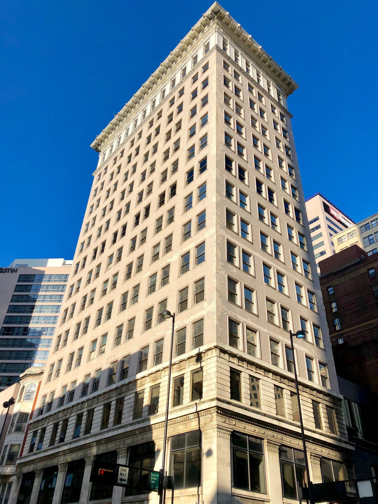

Na noite de 28 de dezembro de 1879, durante uma tempestade, os vãos centrais da ponte ferroviária sobre o rio Tay, em Dundee, na Escócia, caíram com um trem. Ninguém a bordo sobreviveu. O engenheiro da ponte, Thomas Bouch, já tinha começado outra, ainda maior, sobre o estuário do Forth, perto de Edimburgo. Ela foi abandonada.
No lugar dela, John Fowler e Benjamin Baker desenharam uma ponte que não se parecia com nada: três torres de aço em balanço, abertas na base para resistir ao vento, ligadas por vigas suspensas, com dois vãos de 520 metros. Aberta em 4 de março de 1890, foi por décadas o maior vão em cantiléver do mundo. Custou ao menos 57 vidas, pelo número oficial da época; a pesquisa feita mais de um século depois chegou a 73 nomes.
FICHAFicha da obra
| Por quê | Ligar Edimburgo ao norte da Escócia por trem sem depender da balsa de Queensferry. A ponte era a peça central de uma rede de linhas novas para Perth, Dundee e Aberdeen. | 2+ fontes |
|---|---|---|
| O desastre que veio antes | Em 28/12/1879, a ponte do Tay, em Dundee, caiu com um trem durante uma tempestade, sem sobreviventes. Seu engenheiro, Thomas Bouch, tinha projetado também uma ponte pênsil para o Forth, já com obras iniciadas; ela foi abandonada. | 2+ fontes |
| Mortos no Tay | 59 pessoas têm nome conhecido e estão no memorial de 2013; a estimativa mais alta, repetida desde a época, é de 75. | diverge |
| Projeto | Sir John Fowler e Sir Benjamin Baker. Ponte ferroviária de cantiléver em aço, linha dupla: três torres em balanço duplo, com braços de 680 pés, e duas vigas centrais suspensas de 350 pés. | 2+ fontes |
| Quem construiu | Tancred, Arrol & Co., de William Arrol, de Glasgow, contratada em 21/12/1882. Arrol também tinha o contrato da ponte de Bouch. A dona da obra era a Forth Bridge Railway Company, sustentada por quatro companhias ferroviárias.as quatro ferrovias e a garantia de 4% ao ano vêm do relato de Wilhelm Westhofen, engenheiro da obra | 2+ fontes |
| O vento | Bouch tinha calculado a ponte do Tay para uma pressão de vento de 10 libras por pé quadrado. Depois do desastre, a Board of Trade passou a exigir 56 libras em pontes expostas, e a Forth foi calculada para isso. | 2+ fontes |
| O aço | Todo de forno Siemens-Martin, de usinas na Escócia e no País de Gales. A tonelagem varia com a conta: 42 mil toneladas previstas mais cerca de 16 mil de alterações, segundo o engenheiro da obra; 53 mil pela Network Rail; 55 mil em outras referências. | diverge |
| Prazo | Contrato em dezembro de 1882; fundações a partir de fevereiro de 1883; superestrutura a partir de 1886; obra concluída no fim de 1889 (novembro ou dezembro, conforme a fonte); prova de carga em 21/01/1890; inauguração em 04/03/1890, pelo Príncipe de Gales.o mês de conclusão diverge entre as fontes | 2+ fontes |
| Operários | 4.600 no pico, segundo o engenheiro Wilhelm Westhofen; 3.200 na primavera de 1887 e mais de 4.100 em setembro daquele ano. Cerca de um terço eram irlandeses. O total de pessoas que passaram pela obra não foi registrado.a proporção de irlandeses vem de uma fonte só | 2+ fontes |
| Mortes na construção | 57 acidentes fatais entre julho de 1883 e o Natal de 1889, pela contagem do clube de acidentes do empreiteiro, publicada em 1890. Pesquisadores locais confirmaram depois 73 nomes, incluindo a pintura de 1890 e as obras de acesso; são os do memorial de 2012. Circularam também 78 e 98. | diverge |
| Feridos | 106 levados à enfermaria de Edimburgo e 518 acidentes menores com atendimento médico, segundo Westhofen. Barcos no rio salvaram oito homens de afogamento.os oito salvos aparecem em mais de uma fonte | 1 fonte |
| Custo | Cerca de £3 milhões, segundo a Network Rail; uma conta de 1913 divide em £1,7 milhão para a ponte, £0,8 milhão para instalações e despesas e £0,5 milhão para as ferrovias de ligação. Outra soma chega a £3,2 milhões, contando £250 mil gastos na ponte de Bouch. O valor do contrato de 1882 não foi confirmado em fonte primária; o engenheiro da obra registra só que ele foi ultrapassado.sem conversão para valores de hoje: não há índice confiável para obra de 1890 | diverge |
| Medidas | Vãos de 1.710 pés de centro a centro das colunas, ou 1.700 pés livres (cerca de 520 m). Torres de 110 m acima da maré alta. Trilho a cerca de 46 m sobre a água. Comprimento total de 2.529 m pela medição de 1890, ou 2.467 m pela Network Rail. | diverge |
| Restauro | De 2002 a dezembro de 2011, mais de £130 milhões, pela Network Rail com a Balfour Beatty: 240 mil litros de tinta epóxi, três demãos, cada rebite pintado à mão. A pintura deve durar duas décadas ou mais. | 2+ fontes |
| Hoje | Mais de 200 trens por dia. Patrimônio Mundial da UNESCO desde 05/07/2015. | 2+ fontes |
| Agora | Em agosto de 2026, o Conselho de Fife ouviu que só cerca de 5% das luzes da ponte funcionam e que a Network Rail não pretende tratar disso antes de 2030.noticiado por vários jornais, provavelmente a partir de um mesmo texto | 1 fonte |
01Uma noite no Tay
Até 1890, quem ia de trem de Edimburgo para o norte da Escócia esbarrava em dois estuários: o do Forth, logo ao norte da capital, e o do Tay, junto a Dundee. O engenheiro Thomas Bouch tinha uma solução para os dois: a ponte do Tay, que chegou a ser aberta aos trens, e, para o Forth, uma ponte pênsil com dois vãos de 1.600 pés; em 1873 formou-se a companhia, a lei foi aprovada e o contrato foi assinado com o construtor William Arrol, de Glasgow. Em Inchgarvie, a ilhota no meio do estuário, chegou a subir um pilar de tijolo, depois de uma pedra fundamental lançada com cerimônia.
Em 28 de dezembro de 1879, por volta das sete e quinze da noite, durante um vendaval, os vãos centrais da ponte do Tay caíram com o trem que a atravessava. Ninguém sobreviveu. Quantos morreram nunca se fechou: os memoriais inaugurados em 2013 dos dois lados do rio têm 59 nomes, os conhecidos; a estimativa de 75 vem da época. O inquérito concluiu que o contraventamento e as fixações eram insuficientes para resistir à força do vendaval, e o relatório do comissário Henry Rothery apontou Bouch como o principal culpado, por defeitos de projeto, de construção e de manutenção. Bouch tinha considerado o vento, mas com 10 libras por pé quadrado. Morreu em 1880.

02Cinquenta e seis libras de vento
Segundo Wilhelm Westhofen, engenheiro da obra que viria depois, o desastre e o que se revelou nas investigações abalaram a confiança pública no projeto de Bouch, e a ponte pênsil do Forth foi abandonada. As quatro companhias ferroviárias interessadas na rota da costa leste, Great Northern, North Eastern, Midland e North British, pediram a seus engenheiros consultores, Barlow, Harrison e John Fowler, que estudassem de novo se valia a pena atravessar o Forth e com que tipo de ponte. Foram comparadas a ponte de Bouch, três formas de ponte pênsil reforçada, um cantiléver e até túneis.
Venceu o cantiléver de John Fowler e Benjamin Baker, submetido aos diretores em maio de 1881 e autorizado pelo Parlamento em julho de 1882. A regra do jogo agora era outra: a Board of Trade exigia que pontes em locais expostos fossem calculadas para uma pressão de vento de 56 libras por pé quadrado, mais de cinco vezes o valor usado no Tay. Baker instalou medidores de vento em Inchgarvie, um deles uma placa de 300 pés quadrados, para saber o que o estuário fazia de verdade.

03Três homens e uma ponte
A ideia é simples de mostrar, e Baker mostrou. Numa foto famosa, dois homens sentados em cadeiras, identificados como Fowler e Baker, estendem os braços apoiados em varas de madeira; entre eles, numa tábua suspensa, está sentado o engenheiro japonês Kaichi Watanabe, formado em Glasgow e contramestre na obra. Os braços dos dois são os cantiléveres, Watanabe é a viga central suspensa, e pilhas de tijolos nas pontas fazem de contrapeso. A foto é atribuída a 1887; quando e onde foi tirada não é certo. Em 2007, ela foi parar na cédula de £20 do Bank of Scotland.
Na ponte real, cada uma das três torres é um par de braços em balanço de 680 pés, e entre elas pendem vigas de 350 pés. As torres se abrem até 120 pés de largura na base, para que o vento tenha menos alavanca sobre a estrutura, e as colunas são pares de tubos de aço de até 3,7 metros de diâmetro, inclinados um para o outro. O objetivo, nas palavras de Westhofen, era que a ponte fosse não só a maior e mais forte, mas a mais rígida do mundo, para ganhar a confiança do público. Era também de aço, num tempo em que as pontes eram de ferro: todo o material foi produzido pelo processo Siemens-Martin, em usinas da Escócia e do País de Gales.

04Sete anos sobre o estuário
O contrato foi assinado em 21 de dezembro de 1882 com a Tancred, Arrol & Co., e William Arrol reaproveitou as oficinas que tinha erguido para a ponte de Bouch. As fundações começaram em fevereiro de 1883. Seis caixões de ar comprimido foram afundados, quatro em Queensferry e dois em Inchgarvie, a até 89 pés abaixo da maré alta. A superestrutura começou a subir em 1886, e em 1887 as três torres já estavam de pé, ainda sem os braços, como mostram as fotos que Philip Phillips fez do canteiro.
No pico, segundo Westhofen, trabalhavam ali 4.600 pessoas; ao longo da obra, houve gente a quase 90 pés abaixo da maré alta, nos caixões, e a mais de 300 pés acima dela, nas torres. Os rebitadores trabalhavam por empreitada, em equipes de quatro, com um menino aquecendo os rebites; os meninos conseguiram um mínimo de 20 a 24 xelins por semana. A conta de rebites, que começou em 5 milhões, chegou a 6,5 milhões, e Westhofen escreveu que duvidava que mesmo isso cobrisse o total: só em Inchgarvie foram contados quase 2,7 milhões.
A obra foi concluída no fim de 1889. Em 21 de janeiro de 1890, dois trens com três locomotivas cada, puxando vagões de carvão, testaram a ponte com cerca de 1.880 toneladas. Em 4 de março de 1890, o Príncipe de Gales, futuro Eduardo VII, fixou um rebite dourado e declarou a ponte aberta, num discurso encurtado pelo vento. Tanto o valor do contrato quanto o prazo tinham sido ultrapassados. O custo final aparece como cerca de £3 milhões, ou £3,2 milhões quando se soma o que foi gasto na ponte de Bouch.

05Cinquenta e sete, setenta e três
O número oficial de mortos está no mesmo relato de Westhofen, publicado quatro dias antes da inauguração. Entre julho de 1883 e o Natal de 1889, quando o clube de acidentes do empreiteiro deixou de existir, houve 57 acidentes fatais, 106 casos levados à enfermaria de Edimburgo e 518 acidentes menores. O pior ano foi o da subida das torres centrais, com 17 mortes. Westhofen atribuiu três quartos dos acidentes graves a causas evitáveis e culpou a indiferença dos próprios operários, que jogavam ferramentas dos andaimes; ele também afirmou que nenhuma morte podia ser atribuída ao ar comprimido dos caixões.
Mais de um século depois, a partir de 2005, um grupo de historiadores locais de Queensferry procurou certidões de óbito e jornais para dar nome aos mortos. Chegou a 73: os 16 a mais vêm da pintura inicial, em 1890, e das obras de acesso feitas por subempreiteiros, que o clube não contava. O primeiro da lista foi Thomas Joseph Harris, almoxarife de 16 anos, em novembro de 1883. Em 2012, dois monumentos de bronze, um em cada ponta da ponte, foram inaugurados com nome, idade e ofício de cada um. Outras cifras circularam, como 78 e 98, mas os nomes confirmados são 73.

06A ponte que nunca para de ser pintada
Em inglês, painting the Forth Bridge virou expressão para trabalho que nunca acaba: quando se termina, é preciso recomeçar. A ponte teve, de fato, equipes de pintura por mais de um século. Entre 2002 e 2011, a Network Rail gastou mais de £130 milhões para encapsular a estrutura em andaimes, jatear a tinta antiga, consertar o aço e aplicar 240 mil litros de um revestimento epóxi do tipo usado em plataformas de petróleo, com cada rebite pintado à mão. Ao terminar, em dezembro de 2011, anunciou que a pintura duraria duas décadas ou mais.
Em 5 de julho de 2015, a ponte entrou na lista do Patrimônio Mundial da UNESCO, como obra-prima da exibição franca e sem adornos da estrutura e marco no uso do aço. Em agosto de 2026, ao discutir o plano de gestão do sítio para 2026 a 2036, o Conselho de Fife ouviu que só cerca de 5% das luzes que iluminavam a ponte à noite ainda funcionam, e que a Network Rail não pretende tratar disso antes de 2030. A ponte que nasceu da queda de outra, numa noite de tempestade, segue passando mais de 200 trens por dia, quase no escuro.
MITOSO que circula e o que o registro diz
- O que circula
A ponte do Tay caiu porque os engenheiros ignoraram o vento.
O que o registro dizThomas Bouch considerou o vento, mas com 10 libras por pé quadrado. O inquérito culpou o contraventamento e as fixações insuficientes, e o relatório de Henry Rothery responsabilizou Bouch por defeitos de projeto, construção e manutenção. Depois do desastre, a exigência passou a 56 libras.
- O que circula
Morreram 57 operários na construção.
O que o registro diz57 é a contagem de 1890, feita pelo clube de acidentes do empreiteiro até o Natal de 1889. A pesquisa dos historiadores locais confirmou 73 nomes, que estão no memorial inaugurado em 2012.
- O que circula
A ponte é pintada sem parar: quando a pintura termina numa ponta, recomeça na outra.
O que o registro dizHouve equipes permanentes de pintura, mas o ciclo sem fim é exagero que virou expressão. Desde o restauro concluído em 2011, o revestimento deve durar duas décadas ou mais.
- O que circula
Foi a primeira estrutura de aço do mundo.
O que o registro dizA formulação mais segura é a primeira grande estrutura da Grã-Bretanha construída em aço, e não em ferro. O órgão de patrimônio da Escócia fala em primeira grande estrutura de aço do mundo; outras fontes oficiais limitam ao Reino Unido, e nos Estados Unidos a Ponte Eads, de 1874, já tinha o aço como metal principal.
Episódio em produção
Toda semana, uma obra que não deveria ter ficado de pé.

Edifício Ingalls
Esquina das ruas Fourth e Vine, centro de Cincinnati, Ohio, Estados Unidos · 1902–1904Erguer 64 metros de escritórios sem nenhuma viga de aço, só com concreto e barras torcidas por dentro, quando, segundo as fontes, nenhum prédio de concreto passava de seis andares e engenheiros respeitados juravam que ele nunca chegaria ao telhado.
Ler a obra →MAISLeia também
FONTESFontes
- Wilhelm Westhofen, "The Forth Bridge", reimpresso de Engineering, 28/02/1890 — archive.org
- Wilhelm Westhofen, "The Forth Bridge: Wind Pressure and Wind Gauges", 1890 (Wikisource) — en.wikisource.org
- The Forth Bridges, "Building the Forth Bridge" — theforthbridges.org
- The Forth Bridges, "Forth Bridge History" — theforthbridges.org
- The Forth Bridges, "Forth Bridge Construction Statistics" — theforthbridges.org
- The Forth Bridges, "The Grand Opening of the Forth Bridge" — theforthbridges.org
- The Forth Bridges, "War and Briggers Memorials" — theforthbridges.org
- Network Rail, arquivo histórico, "032 – Forth Bridge" — history.networkrail.co.uk
- Network Rail, "Forth Bridge makes final brush with a modern myth", 05/09/2011 — networkrailmediacentre.co.uk
- Historic Environment Scotland, "The Forth Bridge" — historicenvironment.scot
- UK National Commission for UNESCO, "The Forth Bridge" — unesco.org.uk
- American Society of Civil Engineers, "Firth of Forth Railway Bridge" — asce.org
- Who Do You Think You Are? Magazine, "How many people died building the Forth Rail Bridge?", 15/11/2023 — whodoyouthinkyouaremagazine.com
- Grace's Guide to British Industrial History, "Forth Bridge" — gracesguide.co.uk
- Undiscovered Scotland, "The Forth Bridge" — undiscoveredscotland.co.uk
- Railway Wonders of the World, "The Forth Bridge" (c. 1913) — railwaywondersoftheworld.com
- Tom Martin, "Tay Bridge Disaster" (páginas de pesquisa e memorial) — taybridgedisaster.com
- University of Glasgow Library, "The University of Glasgow, Japan, and the Forth Rail Bridge", 04/09/2015 — universityofglasgowlibrary.wordpress.com
- The Scotsman, "Broken lights on the landmark Forth Bridge won't be fixed until 2030", 2026 — scotsman.com
- Central Fife Times, "Forth Bridge lighting so bad only 5 per cent of them work", 2026 — centralfifetimes.com
- Wikipédia, "Forth Bridge" e "Tay Bridge disaster" (ponto de partida) — en.wikipedia.org
Imagens
- Fig. 01 — A ponte inteira vista de South Queensferry em fevereiro de 2013, com um trem no viaduto de acesso: George Gastin · CC BY-SA 3.0
- Fig. 02 — Os vãos caídos da ponte do Tay, em Dundee, fotografados para a Board of Trade depois do desastre de 28 de dezembro de 1879: Board of Trade (Grã-Bretanha), acervo da National Library of Scotland · Domínio público
- Fig. 03 — O modelo vivo do cantiléver: Kaichi Watanabe suspenso entre dois homens identificados como John Fowler e Benjamin Baker. A foto é atribuída a 1887: Fotógrafo não identificado, para Benjamin Baker · Domínio público
- Fig. 04 — As três torres de pé em 17 de abril de 1887, no dia em que a de Queensferry atingiu a altura total, vistas da margem sul: Philip Phillips, acervo da National Library of Scotland · Domínio público
- Fig. 05 — A base sudoeste da torre de Fife em 7 de setembro de 1886, com os tubos de aço em montagem: Philip Phillips, acervo da National Library of Scotland · Domínio público
- Fig. 06 — Um dos dois monumentos inaugurados em 2012, em North Queensferry, com nome, idade e ofício dos mortos na construção: Rosser1954 · CC BY 4.0